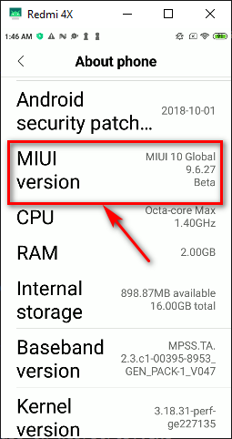
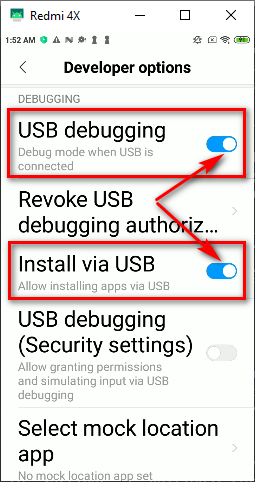

Activate a developer mode on your device to debug with USB-cable
- You can execute the following command gradlew installDebug to run your application on your device connected with USB-cable. But you should to activate developer mode and USB degugging on your device at first. I can show how it looks on my old phone Redmi 4X with Android 7
- Go to 'Settings' > 'About Phone' and touch 7 times on 'MIUI version':

- Go to 'Settings' > 'Aditional setting' > 'Developer options' and activate 'USB debugging' and 'Install via USB':

Follow the next tutorials to build applications for Android: